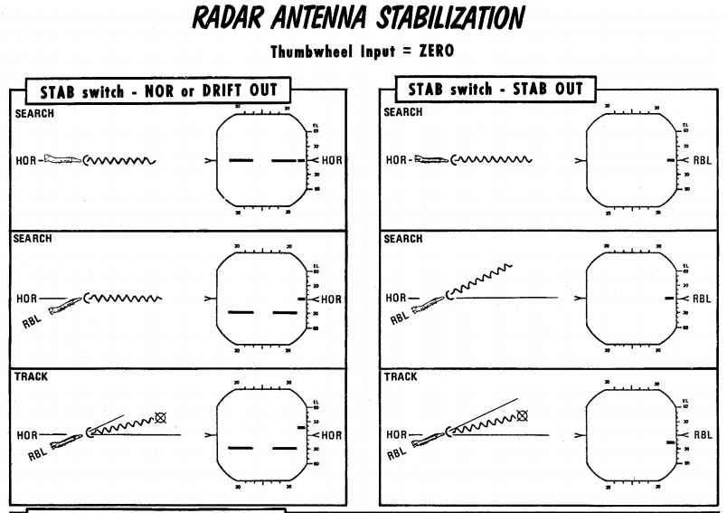
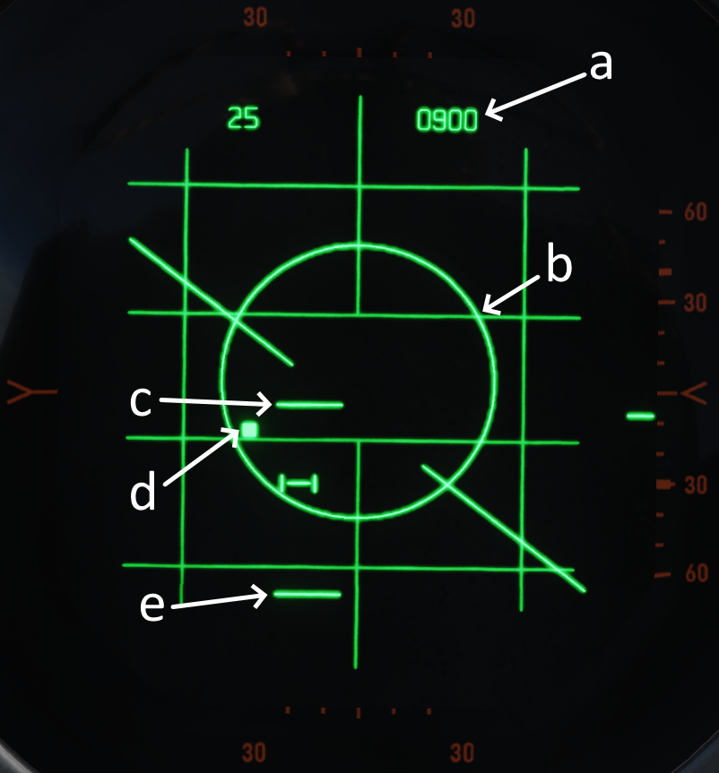
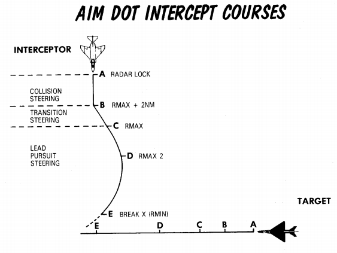
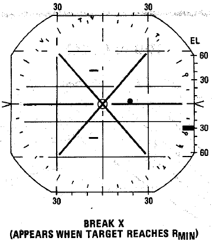

Radar system

A continuation of the F-4C's -100 and the 4D's 109, the Westinghouse AN/APQ-120 Fire Control Radar is a solid state pulse radar providing the F-4E with air to air intercept functionality, air to ground mapping, ground target reference provision to the LABS and WRCS bombing systems, as well as radar beacon capability. The APQ-120 also functions as the display system for TISEO and TV guided weapon imagery, and is integrated with the APX-80 interrogation system.
The primary conversion from the APQ-109 to APQ-120 included a reduction in the number of field replaceable units in the nose, as well as the reduction in their size; whereas the -109 had been a hybrid in its movement towards solid state hardware (primarily in the low voltage processing sections), the 120 was a fully solid-state system. While this update reduced the space overhead and weight for the system, the modification of the F-4 nose to include the M61 cannon required a reduction in antenna size, causing a marginal decrease in overall detection range. However, when taken with the increase in system reliability and reduced maintenance, the tradeoff was considered acceptable.
Starting with production of the F-4E block 60, and retrofitted to selected earlier block aircraft, was the addition of the Digital Scan Converter Group display. The inclusion of DSCG increased the overall ease of handling the APQ-120 by adding additional information on the display directly, including current radar range setting and the calculated range rate value against the current acquired target. Further, clarity of the display in all lighting conditions was improved by rendering the radar reference grids directly as part of the displayed image, rather than the previously used markings on the DVST glass. In addition, DSCG provided the ability of the two crew members to utilize the displays independently; previously, the WSO had control over which mode both the DVST and front seat repeater display would show. With DSCG, the pilot could utilize TISEO or TV air to ground weapons while the WSO maintained a scan pattern or found a ground reference point and inserted it into the WRCS.

Radar set Control Panel

Power

| Name | Description |
|---|---|
| OFF | Powers radar off. |
| TEST | Applies voltage to control monitor power and provides BIT-test functions 1 through 6. |
| STBY | Power applied to radar, remains in a non-transmitting standby state. |
| OPR | System is fully operational. |
| EMER | Overrides the time delay, pressure, and temperature restrictions to allow radar operation. |
Initial powering of the APQ-120 starts by placing the Radar Power Knob into TEST or STBY (Standby). The warmup cycle requires 3 minutes from selecting either setting, and confirmation of this process is shown via the Control Monitor Meter on the Monitor Panel; after 30 seconds from cycling power, the gauge will display a value of roughly 250Vdc; from the point the needle shows power at this nominal value, the warmup procedure will be 2.5 minutes.
After 3 minutes, the radar can safely be placed into OPR (Operate) for employment of the radar, BIT testing can be performed in TEST mode, or the radar can be left in STBY for the safety of crew and others on the ground.
In the event of an emergency situation requiring immediate operation of the radar, EMER can be selected; See the Magnetron and Klystron section for more details.
Range

Range control sets the range of the radar, note there are some modes where the range settings available are restricted or forced to a specific setting.
Current Radar Set range will illuminate the respective indicator range lamp, as well as display the numerical value on the DSCG display in the upper left.

Values up to 50 nmi are indicated as Air-Intercept (AI) are available for Automatic Tracking and, 100 nmi and 200 nmi settings are available for Spotlight.
Polarization Control
The polarization of the radio frequency energy can be changed using the polarization control. In normal operation the LIN setting is used which produces linearly polarized light in the vertical direction relative to the antenna, this minimizes ground returns as many types of ground clutter are less reflective to vertically polarized light. However because the antenna is not roll stabilized increased return intensity may be seen when rolling the aircraft.
Both CIR 1 and CIR 2 are circularly polarized positions. Precipitation is less reflective to circularly polarized light, so CIR 1 and CIR 2 can aid in minimizing clutter in rain or fog.
The polarization is set using the quarter waveplate in the feedhorn which causes the continuous wave emissions to be polarized as described above. This makes only CIR 1 compatible with launching sparrows as the sparrow rear antenna cannot receive counterclockwise polarized light.
| Selection | Description |
|---|---|
| LIN | RF energy is lineally polarized in a vertical orientation. AIM-7 can be fired. |
| CIR 1 | RF energy is circularly polarized clockwise. AIM-7 can be fired. |
| CIR 2 | RF energy is circularly counterclockwise. AIM-7 cannot be fired. |
💡 Only LIN and CIR 1 modes can be used with the Sparrow, a Sparrow launched using CIR 2 will not guide.
Maneuver Switch

The maneuver switch is used to specify the tracking response to target accelerations.
| Selection | Description |
|---|---|
| LOW G | Default position. Limits tracking accelerations to reduce response to countermeasures and clutter. |
| HI G | Allows track loop to respond with any acceleration. |
HI G is forced when Computer Automatic Acquisition is used.
Scan Switch

The scan switch specifies the number of elevation bars used in search.
| Selection | Description | Total Vertical Coverage (degrees) |
|---|---|---|
| 1 Bar | Scans along radar plane. | 6.7 (3.7 without nutation) |
| 2 Bar | Scan alternates between 1.875 degrees above/below the radar plane. | 10.45 |
1 Bar Scan is automatically commanded when MAP is selected on the Radar Mode Knob. For BST, AIR-GND and CAGE conditions scan switch position is not relevant.
Aspect

The aspect knob is used to provide the Sparrow with a simulated doppler signal when no lock is achieved to aid with sparrow speed gate lock-on when sparrow is to be fired in boresight. When the radar is tracking, the calculated (or manual if in manual) closure is used to set a narrow sparrow speed gate +/- 150 kts around the closure for the sparrow to search when launched.
The aspect knob also controls the display mode of the DSCG numeric output while the radar is is in track.
See below the display and speed get settings for the various positions of the aspect knob, with Vc indicating selected closure velocity for the speed gate, where TAS is the aircraft true airspeed.
| Selection | DSCG Display | Sparrow Speed Gate Setting (Vc) |
|---|---|---|
| WIDE | Closure Velocity | Entire Spectrum |
| NOSE | Altitude | TAS + 450 +/- 150 kts |
| FWD | Aspect | TAS + 240 +/- 150 kts |
| AFT | Closure Velocity | TAS - 240 +/- 150 kts |
| TAIL | Heading | 0 +/- 150 kts |
Closure Velocity - Displayed in knots with positive values indicating closing and negative values indicating opening.
Altitude - Displayed in hundreds of feet (with the last digit always zero) for example 20,000 MSL would be displayed as 200.
Aspect - Angle off the tail of the target aircraft to the shooter (own ship), this means if the target is flying directly away is 0 degrees and directly towards is 180 degrees. Left is shown by negative values and right by positive values.
Heading - Heading is displayed in degrees from 000 - 360 with the last digit always zero.
Receiver Gain (RCVR GAIN)

The stacked RCVR GAIN potentiometers FINE on top and COARSE on the bottom, provide the ability to adjust the receiver gain. FINE is used for small adjustments and COARSE is used for large adjustments. For more information see Gain Control section.
Track Switch

Track switch alters range tracking settings. The default position is AUTO which operates normal range tracking with Home on Jam if jamming is detected. Home on jam can be disabled (if jamming is erroneously detected) by setting the track switch to AOJ OUT. Lastly if required manual range tracking can be used by setting MANUAL at which point the MAN Vc knob position will be used to set the tracking gate closure velocity.
Display Knob

The DSCG can display returns in B-Scope or Plan Position Indicator (PPI) display.
In B-Scope the horizontal axis of the display indicates azimuth, and the vertical axis represents slant range.
In PPI the horizontal axis is distance to the left and right of the aircraft, with the vertical axis representing distance along the track of the aircraft.
There are also two Sweep Settings NAR and WIDE, NAR is a narrow 45 degree sweep and WIDE is a full 120 degree sweep. See Automatic Search for more.
The display can also be directed to provide course guidance for a Vis Ident (VI) intercept profile against a locked target.
Manual Vc (MAN Vc)

The MAN Vc switch is a 12 position used to set a closure velocity for manual range tracking. The 1,2 two positions counter-clockwise set an opening velocity of 100 and 200 knots respectively. The 0 to 9 positions clockwise set a closure velocity from 0 to 900 knots.
Closing refers to an target decreasing in range and opening refers to a target increasing in range.
Pulse Switch

The pulse switch sets the pulse and pulse repetition frequency for the radar set. See the Pulse Setting for more information.
In AIR-GRD mode and Computer Automatic Acquisition, the pulse switch is disabled automatically and SHORT pulse is commanded.
Radar Modes (MODE)

Specific radar operating modes are dependent on the radar mode knob but also several other conditions and switches. For a comprehensive description of the radar operation see the Radar Operation (General), Radar Operation (Air-To-Air), Radar Operation (Air-To-Ground)
This section will briefly cover each of the positions of the radar mode knob and link to the relevant sections below.
BST (Boresight) Position
BST forces the radar into the boresight state. This is used when the target is spotted visually or a Sparrow is to be fired without radar tracking.
RDR (Radar) Position
RDR position puts the radar in Automatic Search.
MAP Position
MAP position is identical to the RDR position puts the radar in Automatic Search, with the exception that nutation is disabled and the 2 bar search pattern is not available.
AIR GRD (Air to Ground) Position
AIR-GRD position is similar to the boresight position with the following exceptions:
- Angle Track is Disabled while Tracking.
- Antenna is Always Fixed to the boresight with drift stabilization.
BEACON Position
BEACON may be used with any Display Knob position other than VI, as desired. BEACON does not display radar echos and instead listens for transponder responses from specific beacon equipment.
TV Position
The TV Radar Mode setting is not used on DSCG aircraft; this is superseded by the TV display option on the DSCG panel itself, and the TV display option in the pilot's cockpit.
💡 AIM-7 missiles detune and cannot be re-tuned with the Radar Mode Knob in TV.
Skin Track Lamp (SKIN TRK)
The Skin Track Lamp illuminates when an automatically achieved lock-on is established and held by the radar. This coincides with the T symbol being lit on the DSCG panel. A manually tracked, AOJ, or HOJ track condition will not illuminate this lamp (or the DSCG panel T).
FCS Control Monitor Panel
The Control Monitor Panel's primary purpose is to access the built-in diagnostics of the APQ-120. Additionally, the panel mounts auxiliary controls for the system - the Vc Switch and Stab Switch, and the Temp monitoring lamp.
Coords Light
This lamp is not used with the APQ-120.
Temp Lamp
The TEMP Lamp provides a visual indication of an overheat situation in the APQ-120 avionics bays. Should the lamp illuminate, the radar must be powered off immediately to preclude damaging the equipment. Should circumstances require the radar be used during a temperature warning, the lamp should be monitored for continued illumination, and the radar shut off as soon as possible.
Meter Selector Knob
A sixteen-position rotary knob used in conjunction with the Meter Switch to test various voltages, currents, and signals generated by the internals of the radar, independently and in conjunction with the Built-In-Test system. Each position is dual purpose, noted with two sets of values; when the Meter Switch is in the VOLT position, the inner rim of the knob is active, delivering the specified voltage of the selected position. In the SIGNALS position of the Meter Switch, the outer current or signal value is tested.
Monitor Meter
The Monitor Meter displays voltages, current, and signals relative to the current settings of the Meter Selector knob in conjunction with the Meter Switch, or the current Built-In Test setting.
Voltages are confirmed beginning with the -250 position of the Selector knob and the Meter Switch in VOLT, and will indicate in the "1" region of the gauge approximately thirty seconds after radar power-on, signifying correct voltage delivery. After this power-up, the monitor meter will indicate in the "1" region for nominal function if the voltages delivered are correct. The +35 selection is an exception to this rule, as the value for correct function is 2.0 or greater.
In SIGNALS mode, the RX1-RX4 crystal current are functioning correctly with a return in the XTAL region.
The EX1 and 2 test electrical frequency control crysals, and are also nominal when XTAL is returned.
The magnetron, tested in MAG, long pulse operation is confirmed with a return of 1.4 to 1.8, and short pulse operation is correct with a value of 0.9 to 1.15.
KLY, which tests the CW transmitter, should find a value of 0.25 to 1.25 when radiating correctly.
TP 1 tests the temperature and pressure interlocks, and indicates 1 when the interlocks are closed and functioning.
TP 2 confirms waveguide pressure, and a value of 1 is correct.
In LOB, the meter needle will travel roughly between 1.5 to 2.8 as a function of
antenna nutation.
Lastly, the LIN and CIR selectors confirm proper linear and circular pulse
performance; they only register a value of 1 for a transmission of vertical or
clockwise-rotating polarity energy. That is, they do not return a value in CIR
pulse (counter-clockwise) mode.
APQ-120 Built-In Test Knob
Confirmation of proper system performance is performed using the various options on the Control Monitor Panel; specific test modes are defined using the Test Knob.
Meter Switch
Tied to the Meter Selector knob, the two position switch defines which value of the Meter Selector Knob is being tested - VOLT for the inner ring voltage values, SIGNALS for the outer ring current and signal values.
Vc Switch
With selections of 900 and 2700, the switch is used to scale the Vc gap as displayed in F-4Es with the DVST installed, with the newer DSCG installed, the switch must remain in the 2700 position at all times for to ensure correct reading on the display.
Stab Switch
The STAB switch controls the antenna pitch and roll stabilization modes. The default NOR (normal) position maintains stabilization in both channels, and INS system drift compensation is further applied in specific modes (AIR-GND). In STAB OUT the stabilization of pitch, roll, and INS drift is removed from the radar antenna. DRIFT OUT maintains pitch and roll stabilization, while removing the INS drift compensation in modes which use it.
Digital Scan Converter Group
The Digital Scan Converter Group (DSCG) provides an integrated display system of the F-4E's radar and electro-optical systems. The system is composed of the front and rear seat scopes, and is driven by the Indicator Control Unit (ICU) which performs conversion of radar and video signals, along with the application of information and fire control cueing symbology.
Grid Knob
The Grid knob controls brightness of the display field grid.
HOJ Light (H)
The HOJ light illuminates to provide indication that the radar has transitioned to an angle tracking HOJ operation, using only memorized range and range rate information if a jamming condition is detected.
Scale
The Scale knob controls brightness of the angle and elevation scales surrounding the DSCG display field.
Track Light (T)
The Track light illuminates to confirm an angle and range-based lock-on against a target. Same as the SKIN TRK light. See Track for more information.
Contrast (CONTR)
The Contrast knob controls relative DSCG display contrast.
Range (RNG)
The Range knob controls brightness of the range cursor in PPI modes.
Brightness (BRT)
The Brightness knob controls the brightness of the overall DSCG display.
Offset (OFS)
The Offset knob controls brightness of the offset cursor line in PPI modes.
DSCG Mode Knob
The DSCG Mode knob is used to select the current mode of the display.
-
OFF removes all power from the display, ceasing all DSCG functionality.
-
STBY (Standby) places the DSCG in its warmup mode; no display occurs during this process.
-
DSCG TEST displays a dest field to confirm proper display function. The DSCG display field shows a search display with eight shades of grey to confirm proper operation and contrast. Prior to entry of this mode for testing, Range 10 should be selected for correct sizing of the shaded fields.
-
RDR BIT is a built-in test mode that functions in conjunction with the radar for calibration of the signals provided from the radar with the DSCG's ICU.
-
RDR is the operational mode for use with the APQ-120.
-
TV is the display mode used for EO weapons (Maverick/Pave Spike) and TISEO.
Antenna Hand Controller
The Antenna Hand Controller is a joystick found only in the WSO cockpit on the right console; the joystick integrates with the radar to perform range (fore and aft) and azimuth (left and right) positional control of the acquisition symbol on the radar display in the air-to-air modes, as well as seeker/EO sensor direction with Maverick and Pave Spike. Additionally, the joystick includes the Antenna Elevation Control thumbwheel, which controls the elevation angle of the antenna, displayed via the EL strobe on the DSCG display; this elevation scan is limited in both up and down movement to 60 degrees.
In the index finger position of the Antenna Hand Controller is the Action Switch; a two-position switch designated half-action in the first detent, and full-action with full engagement. In air-to- air modes, half-action initiates visibility of the range strobe, allowing for proper range alignment with a target return for automatic lock-on, or selection of MAN Vc rates required for a manual lock. With proper bracketing and range strobe adjustment, full-action attempts the automatic lock-on, or initiates manual angle tracking of the intended target.
The interaction of half- and full-action for the AGM-65 Maverick is detailed in the section on AGM employment.
Range VISIDENT Indicator
The Range Indicator is used for close range VID intercept profiles, providing range information out to two miles and range rate information from inside of 9000'. The information is confirmed as radar-accurate once the range indicator jumps to 9. The gauge functions in the VI, B NAR, and B WIDE display modes; the indicator does not function in air to ground modes.
Air to Air Button
The Air to Air button is a button and a light with the primary function of confirming entry into CAGE mode. When the crew desires to disengage CAGE mode, the WSO can press the light (which also functions as a button) to exit CAGE mode and revert to the current selected settings from the Radar Control Set.
Radar Operation (General)
Magnetron and Klystron
The magnetron and klystron are the two methods for producing radio frequency energy in the APQ-120 radar set. Both the magnetron and klystron radiation is fed through the antenna and emitted from the feedhorn.
Magnetron
The magnetron is the main radio frequency emitter for the radar. It produces pulsed energy which is used to detect and track targets.
Magnetron emission is only present when the Radar Power Knob is in OPER or EMER and all interlocks described below are satisfied.
The magnetron is protected by a wave guide pressure switch and a temperature interlock. If either of these interlocks are open (possibly because of damage or malfunction) the Radar Power Knob can be moved into EMER to return operation, however operation of the magnetron without adequate pressure or cooling, may damage the magnetron and can burn the feedhorn.
The magnetron is not powered until 3 minutes after radar turn on. This can be overridden by moving the Radar Power Knob into EMER, however operating the magnetron without sufficient warm up may result in incorrect pulse width and timing and/or degraded pulse power.
Klystron
The klystron produces continuous wave radio frequency energy, which is used to tune and guide the sparrows.
The klystron emissions are present when the Radar Power Knob is in STBY, OPER or EMER, the Radar Missile Power Switch is in CW and all interlocks described below are satisfied.
The klystron is protected by two temperature switches, a pressure switch and a surge current switch. If any of these interlocks (with the exception of the surge current switch) are open the Radar Power Knob can be moved into EMER to return operation, however damage to the klystron and feedhorn may result.
The klystron is not powered until 100 seconds after radar turn on. This can be overridden by moving the Radar Power Knob into EMER, however operating the klystron without sufficient warm up may result in degraded power.
Feedhorn Nutation
Feedhorn nutation is required for automatic tracking. The feed horn nutates to rotate the radiated energy around the antenna axis. This modulates the radar echos. Where the echo is strongest the antenna will steer if tracking, this drives the antenna back onto a tracked target.
A side-effect of this nutation is increasing the beam-width, from 3.7 degrees (half power) to 6.7 degrees (half power) while reducing the average intensity of the beam.
Below describes the nutation settings for the action switch.
| Mode Knob | Range Knob | Action Switch | Nutation |
|---|---|---|---|
| RDR, BST, AIR-GND | ALL | Release | Yes |
| MAP | ALL | Release | No |
| MAP-PPI | ALL | Half or Full Action | No |
| RDR, MAP-B, BST, AIR-GND | AI | Half or Full Action | Yes |
| Not AI | Half Action | Yes | |
| Full Action | No |
Antenna Stabilization
There are three antenna stabilization modes. Two apply to Air-To-Air Operation and the other to Air-To-Ground Operation.
NOR
Normal operation of the antenna stabilization.
In Automatic Search Antenna is stabilized in pitch and roll to the horizon (radar plane). The center of the radar scan is along the heading of the aircraft. In this mode the zero degree mark on the display indicates the horizon.
In Air-To-Ground Ranging Antenna is boresighted to the radar boresight line but stabilized in drift.
DRIFT OUT
The same as NOR but drift stabilization is removed.
STAB OUT
In Automatic Search Antenna does not stabilize to the horizon, but instead th aircraft reference.
In Air-To-Ground Ranging Antenna is boresighted to radar boresight line without drift stabilization. In this mode the zero degree mark on the display indicates the radar boresight line.

Pulse Setting
The pulse setting determines several characteristics of the radar set. These include the length of the transmitted pulse, which amplifier is used to amplify the signals, the frequency at which the pulses are emitted (pulse repetition frequency).
The Pulse Switch controls the pulse setting. The LONG and SHORT settings force the pulse setting into that mode. With the exception of AIR-GND, and Automatic Acquisition which force the mode into the SHORT setting.
| Mode | Amplifier | Pulse Repetition Frequency (PRF) Setting (Hz) | Pulse Length (microseconds) |
|---|---|---|---|
| LONG | Narrow Band | 370 | 2.0 |
| SHORT | Back Bias | 1060 | 0.4 |
The AUTO setting enables the power-level mode switching (PLMS) described below.
Power Level Mode Switching
Power Level Mode Switching automatically selects the LONG or SHORT, and Narrow Band or Back Bias, amplifiers depending on several conditions such as target range, echo strength, noise signal.
Gain Control
The amplification of the signals that enter the receiver is called the gain. The gain setting is important to both search and tracking operations.
Manual Gain Control
The gain can be altered manually. This changes how returns are displayed. Higher gain settings amplify all echos but can result in noise and saturation resulting in degraded image. Lower gain settings will result in better target contrast, however weaker returns will not be visible, this can degrade detection range. When radar locks on the gain control is switched to the Automatic Gain Control Circuit and manual gain control no longer is used.
Getting the correct gain is a balance and comes with experience, as a general rule of thumb for search the gain should be increased until a small amount of noise (random specks) begins to show.
Along with receiver gain the display also has image levelling, after adjusting the gain it may take a few scans for the image to adjust the level correctly.
Automatic Gain Control
The automatic gain control takes control of the gain setting once the radar is in track. The gain is adjusted automatically using the target within the range tracking gate to provide a consistent target signal for tracking.
Sensitivity Time Control (STC)
The strength of a radar echo falls off with 1/r^4 where r is the range. This means on a normal display the brightness of the radar returns will get dimmer with distance. For ground mapping the APQ-120 counteracts this effect. With the Radar Mode Knob in MAP and the Display Knob in a PPI mode. Sensitivity Time Control is enabled. This exponentially increases the receiver gain with range to counteract the echo power fall off with range. This provides an approximately even brightness with increasing range.
Radar Operation (Air-To-Air)
Radar operation air-to-air includes RDR-B and MAP-B modes along with the BST mode. RDR-B and MAP-B can be used with automatic search and BST mode can be used as a close range mode to cue a target on the boresight.
Automatic Search
During automatic search, the antenna moves back and forth in the radar plane. The limits of this search are determined by the Display Knob. Search is normally 120 degrees wide with the display knob in WIDE positions, in NAR positions the search is limited to 45 degrees wide. Only Display Knob positions with B are usable with Air-To-Air operations.
The Radar Mode Knob knob is used to select automatic search by selecting either RDR or MAP. In RDR the number of bars can be selected by the Scan Switch. In MAP only 1 bar is used regardless of scan switch. Feed horn nutation is used with RDR but not MAP leading to an estimated beam-width of approximately 6.7 degrees in RDR and 3.7 degrees in MAP.
Selecting BST or AIR-GND on the Radar Mode Knob antenna scan is boresighted along the radar boresight line.
Below shows the usual symbology present in Automatic Search and Boresight Modes.

| Item | Name | Description |
|---|---|---|
| a | Range Display | Shows Current Selected or Forced Range |
| b | Radar Cursor | The radar cursor is used to select targets and displays the current selected range and azimuth. It is moved by the antenna hand control. |
| c | Antenna Elevation | Shows Antenna elevation (in degrees) relative to the radar plane, or aircraft if the Stab Switch is in OUT. This can be moved with the antenna hand control elevation wheel. |
| d | Radar Grid | Left and Right Vertical Lines show 30 degrees left and 30 degrees right. This measurement is relative to the radar plane with the Stab Switch in NOR or DRIFT OUT and relative to the aircraft with the Stab Switch in OUT. Each horizontal line marks a scale where the gaps are 1/5 of the current range setting of the display. |
| e | Horizon Line | Shows the Horizon Line, Only present with Stab Switch in NOR or DRIFT OUT |
Acquisition
Acquisition can be used with any radar mode which uses B-Scope and is used to achieve tracking condition.
With the Radar Mode Knob in RDR or MAP, Half Action can held on the antenna hand control trigger. This begins acquisition, in RDR or MAP the antenna azimuth will follow the acquisition symbol. In all modes where acquisition can be used the range of the acquisition symbol will set the desired range for lock-on.

| Item | Name | Description |
|---|---|---|
| a | B-Sweep | The B-Sweep displays the current radar echos along the azimuth of the antenna, these are displayed in both acquisition and track. |
| c | Acquisition Symbol | Like the Radar Cursor the acquisition symbol shows the current selected azimuth and range. It is moved with the antenna hand control. It is also displayed in track to indicate target range and azimuth. |
| c | Target Echo | Target Return Displayed Along the Azimuth |
Track
Automatic tracking can be commanded by first entering acquisition and then once the target has been bracketed by the acquisition symbol Full Action can be depressed. The radar will enter automatic track.
The type of track entered depends on the selected mode. There are two types of tracking circuits available, angle tracking and range tracking. These will both be described below.

| Item | Name | Description |
|---|---|---|
| a | Display Readout | Display Readout depends on the position of the Aspect Switch |
| b | Allowable Steering Error | Describes Max off Angle Launch Envelope, See Allowable Steering Error |
| c and e | Range Strobes | Indicates Launch Envelope, See Range Strobes Description |
| d | Aim Dot | Provides pilot steering, See Aim Dot |
In the WSO Cockpit there is an engraved T which illuminates if a range track condition present.
Angle Track
Angle tracking circuit steers the antenna to keep the target centred. It does by making use of feedhorn nutation (conical scan). The antenna steers towards the direction of highest amplitude in the nutation scan pattern. As a result angle tracking cannot be achieved without nutation (MAP-B begins nutation when using acquisition).
Angle Tracking has two settings set by the Maneuver Switch, HI and LOW. These set limits on the acceleration in the angle tracking circuits.
Antenna steering has several important functions:
- Tracking Target Location in elevation and azimuth
- Providing head aiming angles to the sparrow for sparrow lock-on.
- Illuminating the target with continuous wave radio frequency energy for sparrow guidance.
Range Track
The radar uses a range gate to select a target in range. The uses only radar returns within the range gate for its circuits. This helps eliminate clutter and other targets, and allows angle tracking circuits to accurately track the target of interest without erroneous signals.
In range track the range gate uses the radar echos to automatically correct any error between the range gate and the target echo. This causes the range gate to move, the rate at which the range gate moves is the closure velocity and displayed on the screen, this is also used to supply the sparrow with a closure velocity to set the sparrow speed gate for target tracking.
Range track can operate in memory mode. When in memory mode the range gate will continue to move down at the last calculated closure velocity. When this occurs the SKIN TRK light and T light on the DSCG will go out, the range rate digits will begin to flash at 4 Hz. If memory mode was entered because the target was lost the system will drop lock if the target does not reappear within 5 seconds.
Memory Mode will be Entered under several conditions:
- Manual Search is Selected (Track Switch)
- Target is lost.
- Jamming condition is detected.
Home On Jam
The back bias amplifier in the radar produces a noise signal based on the overall strength of the echos. Once this noise signal exceeds some threshold the system will consider it a jamming condition and enter home on jam. The range track circuit goes into memory mode, the angle track circuit continues to operate and track the jamming target in elevation and azimuth.
The Home On Jam condition is also indicated by the engraved H on the DSCG and the last zero of the closure velocity is replaced by a H along with the closure rate flashing.
Spotlight
In the 100 and 200 mile ranges, a procedure known as Spotlight can be used to maintain radar monitoring of a target manually. Spotlighting entails placing the acquisition cursor over the desired return, then selecting and holding the full action trigger position of the Antenna Hand Controller. Doing so, the antenna will nutate and revert to the chosen Polar switch selection to increase target definition, but without attempting the automatic lock-on. The target can be maintained in a well-observable state by holding full action and following the target return with the Antenna Hand Controller until it reaches a range that lock-on can be achieved (with the applicable change in range setting; the radar cannot attempt a lock at an incompatible range setting).
Intercept Computations
The LRU-1 intercept computer can calculate firing envelopes for the Sparrow and Sidewinder Missiles.
Range Strobes
The DSCG can display two range strobes at any given time representing the missile envelope. There are three possible strobe types.
| Range Indication | Description |
|---|---|
| Rmax | Maximum range of the missile provided the target continues flying on current heading and course. |
| Rmax2 | Maximum range of the missile if the target performs the shortest high g turn to tail aspect. |
| Rmin | Minimum range capability of the missile. |
| Missile Selected | Strobes Displayed |
|---|---|
| Sparrow | Rmax and Rmax2 |
| Sidewinder | Rmax and Rmin |
All ranges are calculated for valid pilot pickle not weapon away. This means if the missile envelope is met on the display then pickle can be pressed and envelope will be valid for missile launch.
Allowable Steering Error (ASE) Circle
The allowable steering error indicates the maximum lead or lag at which the missile can be launched and still retaining a high probability of hit. The circle diameter gradually increases in size once Rmax is reached and gradually begins decreasing in size as the target range approaches Rmin.
With the Sparrow selected the max ASE Circle size is 25 degrees for an AIM-7E and 35 degrees for an AIM-7F.
With the Sidewinder selected the ASE Circle size is fixed at 1.2 degrees with the Sidewinder caged. With the sidewinder un-caged the ASE Circle dynamically changes size as described above, with the max diameter representing 25 degrees.
Aim Dot
The aim dot provides steering commands to the pilot. There are three different types:
- Collision Steering, this minimizes time to intercept by putting the fighter on an intercept course.
- Transition steering. This begins 2 nmi outside Rmax and steers the aircraft towards the next steering type.
- Lead pursuit, inside Rmax lead pursuit minimizes the missile's post-launch maneuvers.

Shoot/In Range Lights
Shoot Lights illuminate provided the following conditions are met:
- Aim Dot is Inside the ASE Circle
- Target is within Rmax and Rmin
If sparrows are selected then shoot lights are also inhibited when the target aspect is 90 degrees +/- 9 degrees (left or right) and the target is lower than 5 degrees above the horizon. This prevents shooting a sparrow into the main lobe clutter.
Hold Altitude Light
Hold Altitude Light illuminates provided the following conditions are met:
- Range is greater than the computed snap-up range.
- Altitude is greater than 32,000 ft.
- The target is more than 8000 feet above the fighter.
When the light is illuminated the azimuth error in the aim dot should be corrected only when the light goes out the fighter should snap up to center the aim dot.
Break X
In all modes (except VI) when the target is lower in range than the calculated Rmin the Break X symbol will be displayed to indicate minimum range condition.
In Visual Intercept (VI) break X is displayed when range is less than 1000 ft.
When break X is displayed ASE Circle is also removed.

Firing Interlocks
There are several interlocks to prevent firing missiles in unfavorable conditions.
For the Sidewinder the only interlock prevents the missile being fired with the flaps in the down position.
For the Sparrow there are several conditions:
- The aim dot must be within the ASE Circle
- The in range and shoot lights must be on
- There must be no break X condition
- The selected mode must not be Visual Intercept
The interlocks are overridden automatically with a HOJ condition or when the Sparrow is to be fired in boresight mode. The interlocks can be overridden manually with the interlock switch.
Boresight and Cage Condition
Boresight
Boresight can be entered either by selected Mode Knob to BST or by depressing the cage switch on the throttle. The latter enters a cage condition which is very similar to boresight entered through BST with the exception that the cage condition limits the range to 5 nmi and forces the manuever setting into the HI position.
When in boresight the antenna is fixed along the radar boresight line and the radar returns are displayed on the scope as in an acquisition mode. Acquisition can be commanded with half action as in automatic search to acquire and then full action can be used to initiate track, range and angle tracking will begin as normal.
Sparrows can be fired without tracking the target. Instead the pilot must position the target in the on the gunsight pipper, the WSO can select and appropriate aspect setting then Sparrow can be fired.
Cage Condition
The cage condition is an close combat mode which can be entered at any time by depressing the cage button on the pilot throttle. This by default puts the radar into boresight as described above.
When the cage condition is present the following changes happen:
- Air-To-Air light in the rear pit illuminates.
- Trigger control is transferred to the air-to-air weapons (including when ARM and TV are selected)
- Optical sight switches into the A/A mode.
- Computer Automatic Acquisition becomes available.
If a track condition exists before the cage button and the pinky switch is in radar or heat the radar breaks track and returns to boresight. If pinky switch is in guns lock is not broken.
Cage mode can be exited from either cockpit, the pilot can place the Weapon Select knob into or out of the B position. If the pilot leaves the Weapon Select knob in B, it does not preclude a later entry into Cage mode. The WSO can exit cage mode by pressing the Air To Air Button.
Computer Automatic Acquisition Mode (CAA)
Once in Cage mode, the radar can be selected in to Computer Automatic Acquisition using the Nose Gear Steering button. In CAA, the radar enters a vertical-oriented scan pattern 78 degrees in height by 15 degrees wide, the scan is 3 vertical bars wide. Actual radar lock capability within this scan pattern is from +45 degrees above the horizon line to -9 degrees below the horizon line due to APQ software limitation. In the event that the radar finds a suitable target within the scan volume, the target will be locked. Should the flight crew find the locked target not be the one intended, the Nose Gear Steering button can be pressed on either stick grip to return the radar back to the search pattern.
In CAA mode, the radar’s search pattern can be shifted left, right, center utilizing the Pinky Switch.
| Pinky Selection | Scan Center |
|---|---|
| Guns | Left (-15 deg) |
| Heat | Center (0 deg) |
| Radar | Right (+15 deg) |

To exit CAA, the pilot can select position B on the Weapon Select Knob, or the WSO can push the Air to Air button. Should a radar lock be in place at the time of mode exit, it will be retained.
Radar Operation (Air-To-Ground)
Radar operation air-to-ground includes the AIR-GRD mode and RDR-PPI and MAP-PPI. AIR-GRD mode is used as a form of radar ranging for WRCS DT. RDR-PPI and MAP-PPI are used for WRCS offset bomb and target find modes.
Air-To-Ground Ranging
AIR-GRD mode is available when the Mode Knob is positioned in the AIR-GRD position. AIR-GRD is used for air-to-ground ranging and is available only in AI ranges. In this mode the antenna is fixed to the radar boresight while also being stabilized in drift, this drift correction can be removed by setting Drift Out on the Stab Switch in-case of INS malfunction.
AIR-GRD mode disables Angle Track operation and only uses Range Track. Once locked on the main lobe clutter (ground radar echo) will be tracked in range.
To use AIR-GRD 5 or 10 nmi range should be selected. Once the target has been identified the pilot should make a 10 - 40 degree dive towards the target. The receiver gain should be reduced to produce a clutter signal of approximately 1/2 nmi. This is done to prevent erroneous track of sidelobes which would result in incorrect ranging information.
AIR-GRD Acquisition Procedure is as follows:
- Adjust Receiver Gain to Reduce Clutter Signal to 1/2 nmi.
- Position Range Strobe over Clutter Signal.
- Press Action Switch to Half and Then Full Action. Release after ASE Circle is Visible.
- Confirm Lock-on.
💡 The radar can track ground clutter from beyond 25,000 ft however the max value that can be fed into the WRCS is 25,000ft.
Sometimes false tracking can occur, this can be indicated by a rapid decrease in slant range displayed on either the optical sight or radar.
To correct this condition the following actions can be taken:
- Press Action Switch to Half Action, Release.
- Begin Acquisition process again.

Map Mode (PPI)
Radar Map mode PPI (position plan indicator) is a display which shows radar returns plotted with their real position relative to the aircraft. The aircraft position is at the bottom center of the display, lines parallel to the vertical axis of the display are parallel to the aircraft track. Lines parallel to the horizontal axis of the display are offset from the track up to a maximum of half the current display range.
PPI Mode can be accessed by changing the Display Knob into PPI-WIDE or PPI-NAR. With the exception of 5 nmi which is always displayed in B-Scope interpretation.
The range cursor is an arc of constant range from the aircraft. The offset cursor is an offset parallel to the drift of the aircraft, which can be offset left or right of the aircraft's current track. Offset Cursor and Range Cursor can only be displayed in PPI modes.
Both Range and Offset Cursor are displayed if Weapon Delivery Mode is set to TGT FIND or OFFSET, or Radar Mode Knob is set to BEACON. If this is not the case then only Range Cursor is displayed at a fixed range which can be adjusted by the ground crew.
The Along Track Control is used to increase and decrease the current setting for the range cursor. The Cross Track Control is used to move the offset cursor to the left and right of the aircraft's track.